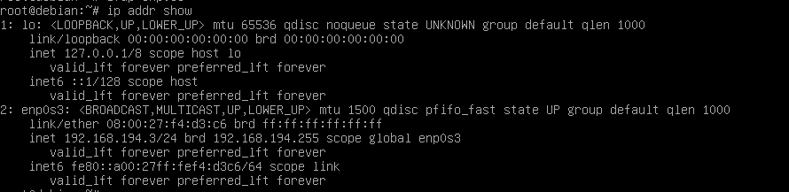

- Creer et gérer des machines virtuelles -
Informations
Vous devez exécuter toutes les commandes de cette section sur votre machine de virtualisation.
Executer le script vmiut :
(virtu)utilisateur@acajou12:~$ source /home/public/vm/vm.env
Attention
Vous devrez utiliser la commande source dans chaque nouveau shell
Informations
Pour manipuler les machines virtuelles utilisez vmiut (cf 'vmiut --help').
Les machines virtuelles seront stockées sur acajou12 dans /usr/local/virtual_machine/infoetu/utilisateur.
Création d’une machine virtuelle
Création de la machine virtuelle matrix
(virtu)utilisateur@acajou12:~$ vmiut creer matrix
Virtual machine 'matrix' is created and registered. UUID: 5c1daebf-bb94-4988-add4-11052b12e2e8 Settings file: '/usr/local/virtual_machine/infoetu/utilisateur/matrix/matrix.vbox' 0%...10%...20%...30%...40%...50%...60%...70%...80%...90%...100% Clone medium created in format 'VMDK'. UUID: 47653a3f-bda0-41a0-8eb2-6ae1429665e1 # Paramètres vmiut MACHINE=matrix VBOXES=/usr/local/virtual_machine/infoetu/utilisateur RESEAU=vmnet8 MEMOIRE=1024 VRDEPORT=5000-5050 MODELE=/home/public/vm/disque-5Go-bullseye.vdi HOST=acajou12 # Paramètres VirtualBox name=matrix UUID=5c1daebf-bb94-4988-add4-11052b12e2e8 path=/usr/local/virtual_machine/infoetu/utilisateur/matrix memory=1024 etat=poweroff vrdeport=-1 mac=08:00:27:f4:d3:c6
Lister les machines virtuelles existantes
(virtu)utilisateur@acajou12:~$ vmiut lister
"Win10" {dc87e177-eb41-457c-9fcc-84c0ca9f38ca} "matrix" {5c1daebf-bb94-4988-add4-11052b12e2e8}
Problème possible
Si, au cours de la SAÉ, le résultat de la commande vmiut lister ressemble à :
"<inaccessible>" {903447fe-d6ca-4f2f-9272-3f465a026540}
alors soit:
- Vous ne vous trouvez pas sur la machine de virtualisation
- Les fichiers de votre machine virtuelle ont été effacés
Démarrer la machine virtuelle
Démarrer la machine virtuelle matrix
(virtu)utilisateur@acajou12:~$ vmiut demarrer matrix
Waiting for VM "matrix" to power on... VM "matrix" has been successfully started.
2.3.3 Arrêt et suppression de la machine virtuelle
Arreter la machine virtuelle matrix
A faire à la fin de chaque séance
(virtu)utilisateur@acajou12:~$ vmiut arreter matrix
Supprimer la machine virtuelle matrix
A n'utiliser que si vous voulez supprimer définitivement votre machine virtuelle
(virtu)utilisateur@acajou12:~$ vmiut supprimer matrix
Astuce
Si vous souhaitez les sauvegarder, vous pouvez copier le répertoire /usr/local/virtual_machine/login/NOMDEMACHNE
2.3.4 Obtenir des informations sur la machine virtuelle
Afficher informations sur la machine virtuelle matrix
(virtu)utilisateur@acajou12:~$ vmiut info matrix
# Paramètres vmiut MACHINE=matrix VBOXES=/usr/local/virtual_machine/infoetu/utilisateur RESEAU=vmnet8 MEMOIRE=1024 VRDEPORT=5000-5050 MODELE=/home/public/vm/disque-5Go-bullseye.vdi HOST=acajou12 # Paramètres VirtualBox name=matrix UUID=5c1daebf-bb94-4988-add4-11052b12e2e8 path=/usr/local/virtual_machine/infoetu/utilisateur/matrix memory=1024 etat=running vrdeport=5000 mac=08:00:27:f4:d3:c6 ip-possible=192.168.194.25
Informations
Si :
ip-possible = ""
Il faut attendre quelques minutes et relancer la commande
Quelques informations sur le réseau et la VM
| Machine | Adresse |
|---|---|
| Machine de virtualisation | 192.168.194.1 |
| Routeur, DNS | 192.168.194.2 |
| Adresses dynamiques (attribuées automatiquement) | 192.168.194.25-192.168.194.128 |
Informations
La machine virtuelle a été créée à partir d’un modèle.
Voici les caractéristiques du modèle:
- Distribution: Debian GNU/Linux 11 (bullseye)
- Utilisateur standard: user, mot de passe: user
- Administrateur: root, mot de passe: root
- Empreinte de la clé SSH: SHA256:SUHhxVJVZFiBQ6/koNbZfA9reKHyzIrvPgJvOEJ8zuE
2.3.6 Utilisation de la machine virtuelle
Informations
Utilisation d'une machine virtuelle :
- Solution 1 : Utiliser une console virtuelle: simule un clavier et un écran qui serait connectés physiquement à la machine virtuelle
- Solution 2 : Se connecter en SSH.
Solution 1 : Console virtuelle
Se connecter à la machine virtuelle matrix en utilisant une console
(virtu)utilisateur@acajou12:~$ vmiut console matrix
Failed to open display
ERROR: Failed to open display:
Informations
Ceci est du au fait que la console virtuelle est une application graphique mais que vous êtes connecté à distance sur la machine de virtualisation. L’application graphique ne peut donc pas afficher sa fenêtre.
Solution
Pour palier à ce problème, nous allons utiliser une fonctionnalité de SSH qui permet de rediriger une application graphique par la connexion SSH.
Arreter matrix
(virtu)utilisateur@acajou12:~$ vmiut arreter matrix
Revenir sur la machine physique
(virtu)utilisateur@acajou12:~$ CTRL + D
Se connecter à la machine de virtualisation en ssh avec l'option -X
(phy)utilisateur@hevea19:~$ ssh -X acajou12.iutinfo.fr
Informations
l’option -X de SSH permet d’effectuer la redirection graphique. Vous pouvez maintenant retenter la commande vmiut console matrix.
Ne pas oublier
(virtu)utilisateur@acajou12:~$ source /home/public/vm/vm.env
Demarrer matrix puis connecter vous à matrix en console
(virtu)utilisateur@acajou12:~$ vmiut demarrer matrix
(virtu)utilisateur@acajou12:~$ vmiut console matrix
Se connecter en tant que root
vm$ debian login : root password : root
Informations
- Si vous voulez vous connecter en tant que root :
login : root
mot de passe : root - Si vous voulez vous connecter en tant que user :
login : user
mot de passe : user
Afficher les informations ip
root@debian:# ip addr show
Informations
On remarque que l'adresse IP de enp0s3 = 192.168.194.25/24

Afficher les informations sur les routes
root@debian:# ip route

2.3.6.2 Solution 2 : Connexion SSH
Se connecter à matrix en SSH grâce à l'adresse IP
(virtu)utilisateur@acajou12:~$ ssh user@192.168.194.25
The authenticity of host '192.168.194.25 (192.168.194.25)' can't be established. ECDSA key fingerprint is SHA256:SUHhxVJVZFiBQ6/koNbZfA9reKHyzIrvPgJvOEJ8zuE. Are you sure you want to continue connecting (yes/no/[fingerprint])? yes Warning: Permanently added '192.168.194.25' (ECDSA) to the list of known hosts. user@192.168.194.25's password: user
Changement de la configuration réseau
Informations
Votre machine virtuelle sera un serveur, hébergeant un service. Il est préférable qu’elle ait donc toujours la même adresse IP. Nous allons choisir l’adresse 192.168.194.3
Changer l'adresse IP de la machine virtuelle matrix
(virtu)utilisateur@acajou12:~$ vmiut console matrix
root@vm# ifdown enp0s3

Modifier les fichier interfaces et resolv.conf
Modifiez les fichiers /etc/network/interfaces et /etc/resolv.conf de façon à ce que la VM ait l’adresse statique 192.168.194.3 et qu’elle utilise le routeur 192.168.194.2 et serveur DNS 192.168.194.2.
root@vm# nano /etc/network/interfaces

Informations Le fichier resolv.conv est déjà bien configuré
DNS (nameserver):
root@vm# nano /etc/resolv.conf

Redémarrer l'interface reseau
root@vm# ifup enp0s3
On obtient cette nouvelle adresse IP statique

Lien de la prochaine procédure